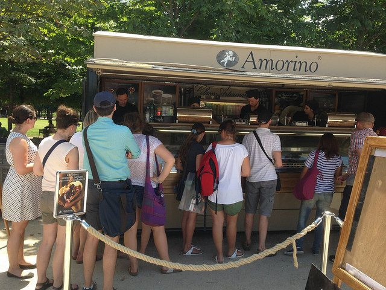

Je suis étudiante, j'ai 19 ans, je vis à Suresnes dans les Hauts-de-Seine chez mes parents. J'ai deux soeurs, l'une a 22 ans, l'autre en a 14 ans. Je suis sociable et très motivée et curieuse quand l'intérêt y est. Je pense que c'est la meilleure façon que je peux utiliser pour me décrire.
J'ai effectué trois années de lycée générale en fillière Economique et Sociale et j'ai obtenu mon baccalauréat en juin 2013 à l'âge de 17 ans.

J'ai travaillé pendant 3 ans en tant que babysitter à garde régulière (tous le jours) en particulier pendant les vacances scolaires. De plus, j'ai également travaillé chez le célèbre glacier Amorino situé au Jardin des Tuilleries à Paris. J'ai pû m'occuper du réassort, de la caisse, de l'accueil des clients et bien évidemment de la confection de glaces et de crèpes pour nos clients souvent très exigeants.
J'ai effectué un stage de 2 mois durant les mois de mai et juin 2014 chez Paris Champions en tant que assistante chef de projet mais également en créa puisque ils ne disposaient pas de personne qui connaissaient les logiciels de PAO. L'entreprise a son siège à Fontenay-sous-bois dans le 94. Il s'agit d'une PME jeune d'un an et demi qui fait de l'actualisation d'informations à propos de l'équipe de football du Paris Saint Germain.
De plus, j'ai effectué un stage chez OneCE une société de commerciaux usant de la patience des responsable des comités d'entreprise pour proposer leurs services. Ce stage a été réalisé en septembre 2014. Le siège social de la société se trouve à Paris dans le 11ème arrondissement. Cette PME a seulement une petite année d'ancienneté et contient une petite dizaine de salariés. J'ai fais ce stage avec une amie de ma classe, ce qui nous a permis de rendre un travail plus efficace et surtout plus rapide.
J'ai effectué toutes mes années de collège et de lycée en classe européenne où je bénéficiais de cours d'anglais très apporofondis avec des professeurs qui ne parlaient pas un mot de français. J'étais également prioritaire en ce qui concerne les voyages scolaires à l'étranger et j'ai pû visiter de nombreux pays anglophones où j'étais placée en famille d'accueil dans le but d'améliorer absolument mon anglais. Dix années de basket ont pu me rendre perseverante et surtout m'ont beaucoup aider à gérer le travail en équipe qui est mon point fort.